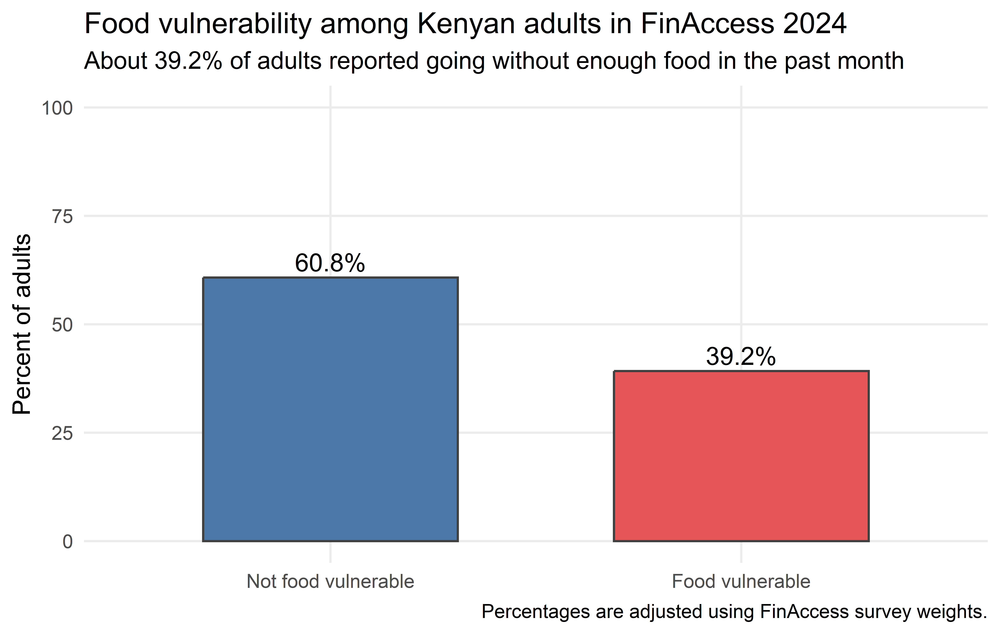

Food Vulnerability in Kenya: What FinAccess 2024 Shows
Data & Evidence
Institutions
This post uses the FinAccess 2024 public data to explore food vulnerability in Kenya. I use a decision tree to identify the groups where food vulnerability is highest.
Recently, I learned that nearly four in ten Kenyan adults in the FinAccess 2024 survey reported going without enough food in the previous month. I expected food vulnerability to appear in the data, but not at this level. In this post I will look at the counties and groups with higher food vulnerability. I will also use a decision tree to see which household characteristics appear together among adults reporting food vulnerability.
County food vulnerability ranges from about 12% in Bomet to 87% in Turkana. Turkana, Tana River, and West Pokot have the highest rates, while Bomet, Trans Nzoia, and Kitui have the lowest. Most counties fall between 30% and 40%, but a sizeable group is above 50%. This shows that the 39.2% national average hides large differences between counties.
County share of adults reporting food vulnerability in the past month
The county map shows us where food vulnerability is high, but it does not show the characteristics of the adults reporting it. The next step is to use a decision tree to see which household characteristics commonly appear together.

The first split in the tree is main livelihood. Adults relying on casual or seasonal work are placed in a separate group. The other splits include credit exposure, partnership status, education, subsistence farming, and own-business activity. These combinations are associated with food vulnerability, but the tree does not show that they cause it.
To create the second map, I selected the terminal groups whose food vulnerability rate was at least 25% above the national average. I also required each group to contain at least 2% of the weighted sample. I then calculated the percentage of adults in each county who belonged to one of these groups.
Risk profiles are terminal leaves from the decision tree with lift >= 1.25 and weighted population share >= 2%.
The first map shows the percentage of adults reporting food vulnerability in each county. This second map shows the percentage who belong to the high-risk groups identified by the tree. It helps us see where the characteristics associated with higher food vulnerability are more common.